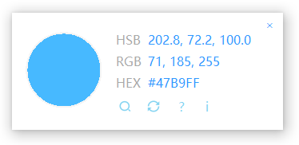

功能
这是一款简约、方便的拾色器，提供拾色、放大镜、色值转换、取色等诸多功能，支持RGB、HSB、HEX等多种色值。（需.NetFramework3.5及以上，Win7及以上自带）

下面是几个常用的快捷键：
按下 Ctrl+Shift+Z 以在窗体外锁定色值
按下 Space 以在窗体内锁定色值
按下 Ctrl++以使用放大镜
按下 Ctrl+-以隐藏放大镜
按下 Ctrl+V 以当前色值打开转换窗口
按下 Ctrl+D 以打开系统颜色窗口
按下 Ctrl+H 以复制 HSB 色值
按下 Ctrl+C 以复制 RGB 色值
按下 Ctrl+X 以复制 HEX 色值
按下 F1 以查看帮助
按下 Esc 以退出